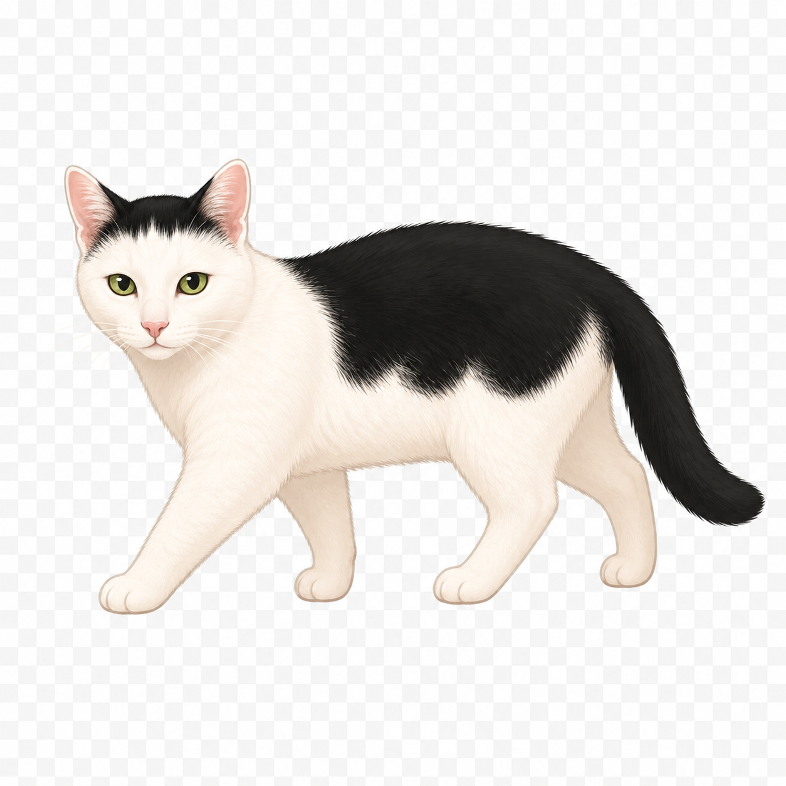
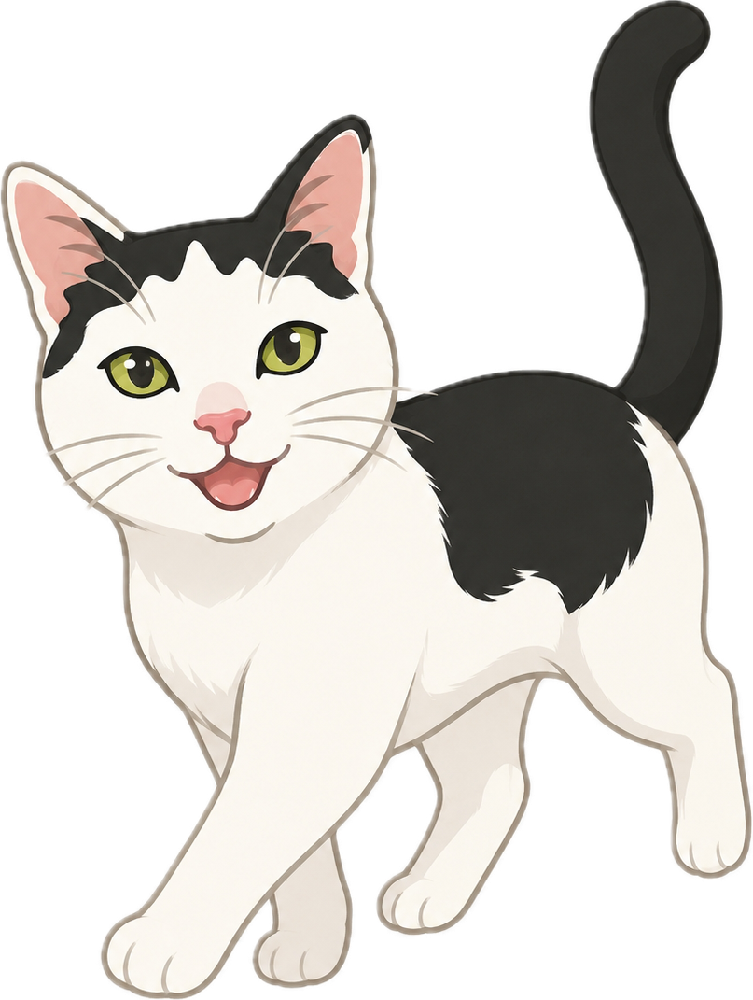
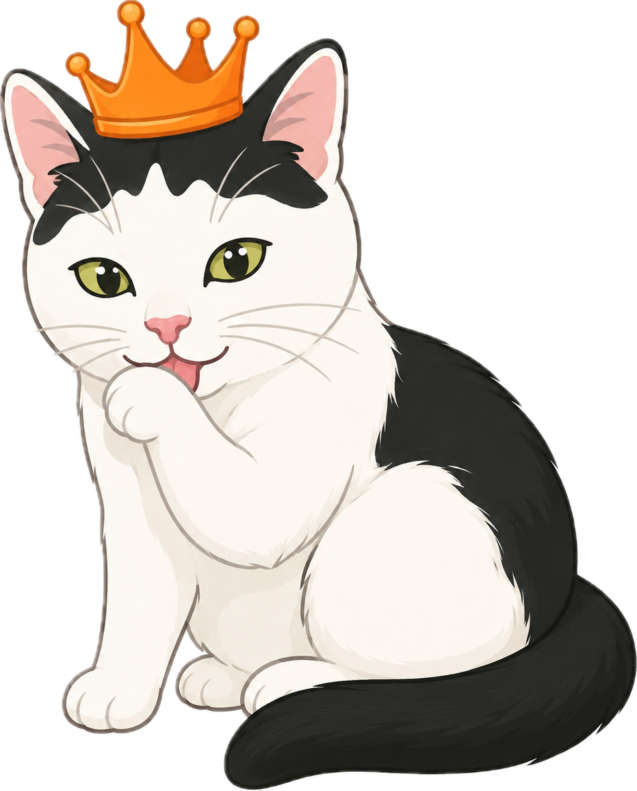

Hi, I'm Poppy! 🐱
Where shall we explore next?
Pick a place to see how to get there, awesome facts, and the most fun things to do for kids — then collect every adventure on your own map!
The whole atlas
Explore places
✦ ✦ ✦
Tap any place to explore it! ⭐ ratings & map pins come from Google Maps.
Get excited
Coming up next 🔜
✦ ✦ ✦
Your booked adventures — tap one to explore it!
Get ready
Help Poppy Pack 🎒

✦ ✦ ✦
Tick things off as you pack them — your progress saves automatically!
Saved trips show up on your map!
Every journey, charted
My Atlas Map 🗺️

Each trip draws a flight path from home — 🇦🇺 Australia in the early years, 🇮🇪 Dublin now — across the world. Tap a marker to remember the adventure!
Places visited
Coming up next
Home · Sunshine Coast 🇦🇺
Home · Dublin 🇮🇪
💖 Dream list
Collect them all
Explorer Badges 🏅
Earn badges as you explore the world. They update automatically from your travel journal!
Your passport to the planet
Countries of the World 🌍
Here's every country your family has set foot in — plus some amazing ones to dream about next!
Collect your stamps
My Travel Journal 📔

Add a trip
Record an adventure — it appears here and on your map!
✦ ✦ ✦
Your journal is saved privately in this browser — it'll be here when you come back!